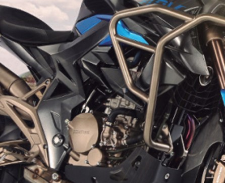
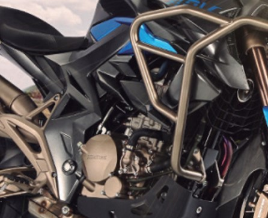
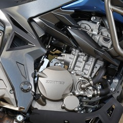
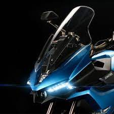
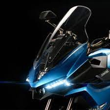

Por qué Zontes y no otra???
Esta marca china, se ha puesto las pilas en hacer algo genuino… de tal forma que más del 85% de los componentes es Zontes… además, contienen unos frenos de muy buena calidad marca discos ABS Bosch 9.1M en ambos trenes (desconectable, por cierto).
 

Sistema de inyección electrónica Delphi, muy confiable de por cierto. Su chasis es tubular, de tal forma que en su interior circula aceite para colabora en la refrigeración del motor y de la caja de cambios que es de 6 velocidades.

Les comento que me encanta la tecnología… en este sentido, esta moto tiene mucho. Además, al ser una marca de origen chino (vieron que son un poco bolados en su arte), el diseño es un tanto futurista con sus perfiles, colores y luces.
 
